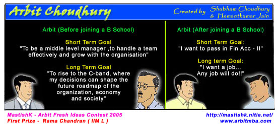
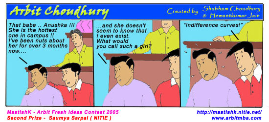

|
MastishK – Arbit Fresh Ideas Contest 2005
(MAFIC’05) MastishK
2005 [www.mastishk.nitie.net], the 1st
Fully & Truly Online Business Challenge, organized by the management
students on NITIE, was held in October 2005. As
an added attraction, Arbit Fresh Ideas Contest was organized as a part of
MastishK '05, where in Arbit Choudhury fans could send in their Arbit ideas,
and the best ideas would feature in Arbit Choudhury comic strips. We received a total of 114 ideas
during the contest. The Top 3 ideas were converted into Comic Strips. Then,
the participants of MastishK 2005, decided the 1st, 2nd
and 3rd prize winning ideas through an online vote. It was indeed a pleasure to announce
the Results of the MastishK – Arbit Fresh Ideas Contest 2005 (MAFIC’05)


Apart from the Top 3 ideas, many
other ideas were greatly appreciated. These ideas will appear in future
editions of Arbit Choudhury. We would like to Thank all the Participants of
MAFIC’05, our Yahoo Group Members and all Arbit Fans who enZoy and share
Arbit Smiles with their Friends, batch-mates and colleagues.
|